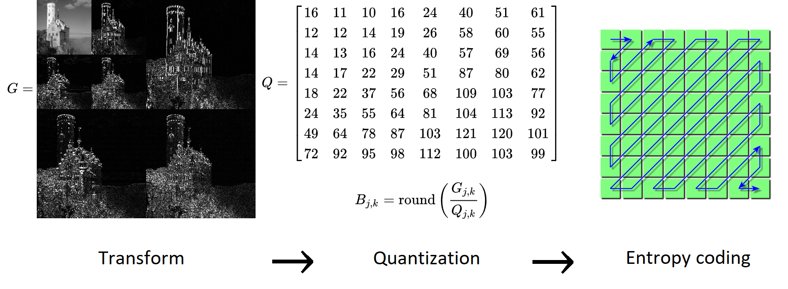

Exploiting Data Compression for Efficient Learning¶
Why is training so expensive?¶
Training data are typically stored using lossy formats (MPEG, JPEG, HEVC, etc).
Input pipelines often require multiple CPU cores as well as one or more coprocessors (GPU, TPU, etc).
Moving the data around is often a bottleneck.
Pretraining for memory efficiency¶
Every new technique to improve efficiency is met with new demands to make models and improve accuracy.
Methods to increase CNN efficiency¶
How do we increase the efficiency of large neural networks?
Quantize the signal, weights, or activations
Exploit the sparsity of the inputs and of the network
Downsample, crop, or resize the inputs
These are exactly the same techniques used in lossy compression
Learning from conventionally encoded data¶
Entropy decoding step is unavoidable
Quantization is typically course and non-uniform (1-4 bits)

Neural lossy compression¶
Google: Soundstream/Lyra (2021)
Currently used in Google meet for low bitrate connections
Meta: Encodec (2022)

Neural image/video compression¶
Many patents have been filed. Expect standardized versions very soon!

Neural representation learning¶
Initial results¶
Model |
Input Size |
Accuracy |
Parameters |
Training Time |
Training FLOPS |
|---|---|---|---|---|---|
MobileNetV2 |
$\(224\times224\times3\)$ |
58% |
2.23M |
32 sec/epoch |
6.1 T |
Resample |
$\(64\times64\times3\)$ |
39% |
250K |
14 sec/epoch |
0.915 B |
VAE |
$\(64\times64\times4\)$ |
44% |
251K |
15 sec/epoch |
0.976 B |
Linear decoding of latents¶
Linear decoding of latents¶
Next steps¶
Explore changes in network architecture
Explore models that can operate on quantized data
Study the effect on data efficiency
Explore efficient pipelines for augmentation